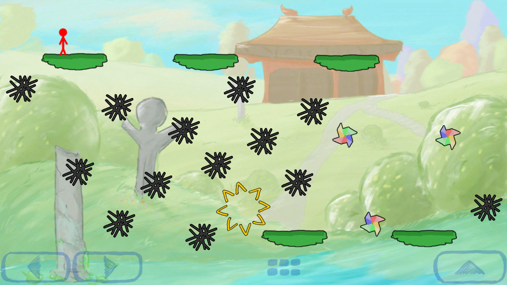
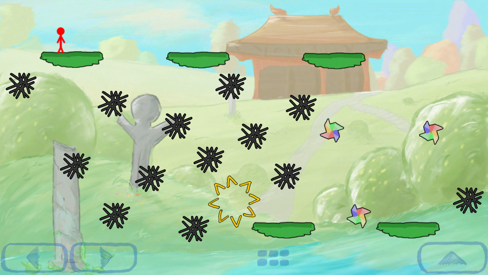

Trace 2 - Best Level Designs
World 1 - GROVE
Tutorials for learning how to walk and draw platform lines on the screen.

Using dotted lines to teach the player to draw creatively.


Later levels require the player to analyze the terrain and find their own path.
 

Cool spike mazes!
World 2 - RUINS

New mechanics/enemies are introduced in safe situations where the player can't be affected by them.


Basic mazes created by using enemies as progress gates.
World 3 - WILDS
These enemies push the player around instead of causing damage. The player is taught this by introducing the enemies in situations where they interact with the player's starting position.

Cubecat hordes!
Players can jump onto a Thwomp and ride it back up to its starting position.
By drawing a line above your head, players can shorten their jump animation. This allows you to run into the shortcut passage below the Spheal as it mirrors your jump.
World 4 - BLOCK


World 4's reduced drawing resolution opens up a lot of possibilities for highly controlled maze puzzles.

A few levels create a different challenge by using terrain that doesn't line up with the player's block grid.
World 5 - MAGMA

The player has to draw additional lines to guide the falling rocks into a location where they can explode safely.

These levels look easy, but if you draw a simple path to the exit the exploding rocks will roll down your lines and hit you.
World 6 - CLOUD

Tutorials for the looping X and Y axes.


Breaking videogame layout standards by placing walls in the center.


Looping borders are great for creating interesting mazes!
World 7 - PULSE


Cool laser patterns!


Increasingly dense grids of neon squares.

Three cycles of enemies can make the player analyze the level more closely before moving.
World 8 - HAVEN


Reverse gravity playgrounds.


Challenging wind tunnels based on VVVVVV's Gravitron.


More cool mazes!

Physics rocks are more dangerous now that they spawn from two sides of the screen.

Breaking design language to add extra drama for the game's finale.